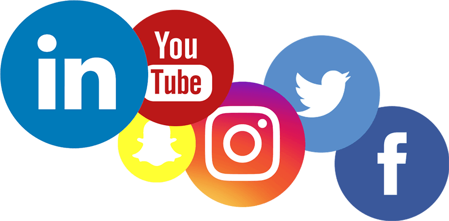

Tips & Lifehacks
Start a budget
A first and critical step when managing your money is to take a
look at your finances and make a budget. A budget is a great tool
to help you figure out what you’re spending your money on every
month. If you don’t know how much money is coming in and going
out, it can be easy to neglect savings and overspend.
There are a variety of money tools available to help you better
navigate your finances and make your life less complicated.
Personal finance apps are designed to help you optimize your
spending and savings choices each month. When you input all your
financial commitments into a money management app, you’ll see your
financial choices and habits more clearly. A money tool can help
you keep track of your spending, budget and income, organize your
expenses, and send you payment reminders.

Understand your credit score
Knowing your credit score and the impact of good and bad credit is
a helpful piece of your financial picture. Whether it’s renting an
apartment, buying a car, or getting a loan, your credit rating can
affect your ability to purchase or lease items. Each of the three
main credit agencies, Equifax, Experian, and TransUnion, lets you
check your credit free of charge once a year. Other services, like
those offered through your bank, or companies like Credit Karma,
regularly update your credit score, let you know who is inquiring
about your credit, and offer information and advice on how to
improve your rating.

Schedule some time to learn
There are so many resources that can help you build confidence in
your financial future. In addition to a variety of books available
on personal finance topics, many government offices have free
resources, like the Federal Financial Literacy and Education
Commission, U.S. Securities and Exchange Commission, and the
Consumer Financial Protection Bureau.
Online money magazines, journals, and websites are other great
resources. They can offer advice for your current situation, give
you long-term insight, and help you understand the latest
financial trends that may affect your financial planning.
Enroll in a financial literacy course
Online schools, colleges, and adult education centers offer a
variety of classes that teach students the basics of money
management – from budgeting to saving, to paying off debt, to
investing. Taking a course can help you to build strong money
habits that can bolster your financial literacy.

Follow financial experts and influencers on social media
One of the best ways to stay current about money and how it works
is to use social media channels to follow financial experts and
influencers on Twitter or LinkedIn. A personal finance influencer
specializes in sharing tips about finances and money on social
media.
Meet with a financial professional
A great way to improve your financial literacy is to meet with a
financial professional who can assist you with planning, saving,
retirement, paying down your debts, and more. To find a financial
professional, submit your information through Midland National’s
find an agent page.